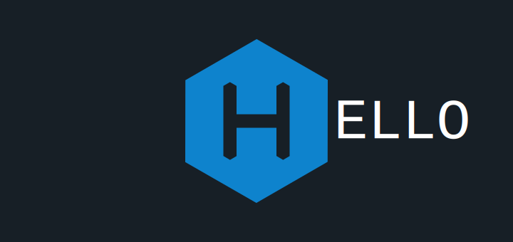

It should probably be a requirement that the first post of any engineering blog be a Hello World homage. Let’s kick this one off with a brief discussion of what makes it tick, along with my reasoning for choosing Hexo to build it.
Decisions Decisions
The choice between the countless blogging frameworks out there can seem daunting, but as with any other technology decision it helps to narrow down the selection by coming up with a priorty list of features. Everyone will likely have a different set of requirements, but I feel mine were pretty simple if not a tad biased.
- Keep it static
- Keep it fast
- Keep it simple
- Keep it extensible
- Keep it secret
- Keep it safe
Power to the client
First and foremost I chose to stay with a static site building solution. I didn’t want to maintain a bloated server and database for a simple blog. This choice may seem limiting at first, but you can almost always find lightweight solutions to add features you may otherwise miss out on. I plan on covering such solutions in the future, but in general HTML5 has given the client much more power to handle jobs once only viable on the server.
The primary reason I decided not to use WordPress is the reliance on a PHP and MySQL back end. I have no real issue using such technologies, and am actually an advocate of LAMP based architectures in many situations. I just didn’t feel the added complexity was warranted for my blog.
A great bonus with a static site over the dynamic variety is you can often find hosting for dirt cheap or even free with services like github pages. This allows you to quickly setup a web presence at a very reasonable price. Having a static site also inherently helps to satisfy item 2 and often 3 of my list.
Hexo is one of many frameworks out there that help you build a static website so this alone was not enough for me to use it.
Speedy delivery
The second desirable feature for me is speed. I come from a world of real time applications written in C and C++ with the occasional use of assembly on the critical path. Scripting systems already have some overhead that can’t be avoided, but this is simply payment for the convinience and safety of developing in such environments. I just wanted to ensure that what technology I did end up using would allow me to build an optimal site in a maintainable manner.
I have already hinted that having a static site can help with performance, but why is that? The primary reason is you don’t have to wait for database requests and you limit the amount of server requests and dynamic page creation required. Once the site loads the performance is largely up to the client, assuming you are not hitting many other services. You can get similar benifits in a dynamic site with caching mechanisms, and you may have a larger payload up front with a static site, but in general the static site should be less resource intensive and more responsive.
Performance is also a very important topic when it comes to development. Hexo is based on Node.js which is a very popular runtime environment utilizing Chrome’s V8 JavaScript engine. Node.js has proven itself to be lightweight and efficient in many applications, and as I am already required to utilize JavaScript for the browser it isn’t that much of a stretch to continue using it with the framework to develop the site.
This is a good time to bring up the other contenders in my decision making process Jekyll and Octopress. Octopress is actually based on Jekyll, adding a few preinstalled plugins and other complexities, so it is enough to consider Jekyll alone in my eyes. The platform in this case is based on Ruby, a language I am somewhat biased against. I do respect the impact Ruby and frameworks such as Rails have had on the development community, but it falls into a breed of languages I prefer to avoid with its dynamic type system. I have also read many accounts where people would migrate from Ruby based frameworks due to speed and maintenance issues. I honestly do not doubt the accounts I have read as Ruby is more tailored to rapid prototypical work rather then massive codebases. The rest is a topic for another post.
In all honesty I would be content without Javascript as well, it is dynamically typed as well, but since it is the language of the web I may as well embrace it. I will also save any further discussion on this topics for another day. For the interested reader there actually are methods to avoid working in JavaScript if you really wanted to (ex: emscripten, Dart, or any other means to cross compile to JavaScript), but for this situation it isn’t worth the hassle.
Simple and flexible
The third and fourth qualities I desired were simplicity and extensibility. I am happy to report that I have found both with Hexo. Sure the support doesn’t seem like it is as active as in the Jekyll ecosystem, but for me it was enough to easily dig into the source and reverse engineer it for myself.
Is it secret? Is it safe?
Ok so I got a little carried away with the last two in keeping with the theme, but I suppose you could make the argument that easily allowing obfuscation with UglifyJS would keep something somewhat secret (albiet a poor way to do so and a topic we will likely touch on more in future posts) and that easily integrating git would allow you to keep your blog safe in the sense of data loss. It also doesn’t hurt that a static site is much easier to keep safe in the sense of security as well.
Conclusion
This post is already much longer then any Hello World should be, so to summarize I have thus far found Hexo to satisfy all of my priorty list. I wanted a static site generator that was fast, simple, extensible, easily post processed, and all under git source control. Thanks to the power of Node.js and the simplicity and flexibility of Hexo I have now found the right framework for my needs.